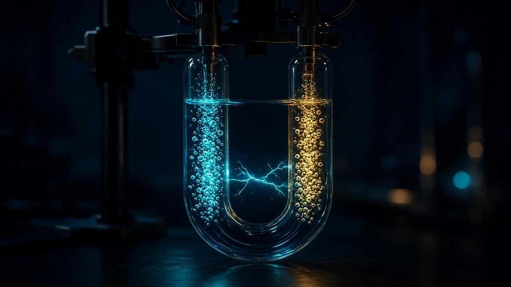

فكرة التجربة كيميائياً
نمرّر تياراً كهربائياً في مصهور أيوني أو محلول مركب أيوني.
مهبط: اختزال | مصعد: أكسدة
الإلكتروليت يوصل لأن فيه أيونات حرّة الحركة، لا لأن «الكهرباء تسيل كالماء».

فاراداي أرى العلم أن المركب يمكن تفكيكه بالتيار. إذا سارت شحنات داخل المصهور أو المحلول، فالذرة ليست كرة صامتة كما رسمها دالتون.
نمرّر تياراً كهربائياً في مصهور أيوني أو محلول مركب أيوني.
مهبط: اختزال | مصعد: أكسدة
الإلكتروليت يوصل لأن فيه أيونات حرّة الحركة، لا لأن «الكهرباء تسيل كالماء».
الذهبي نحو المهبط (−) والسيان نحو المصعد (+). هذا هو معنى الهجرة الأيونية.